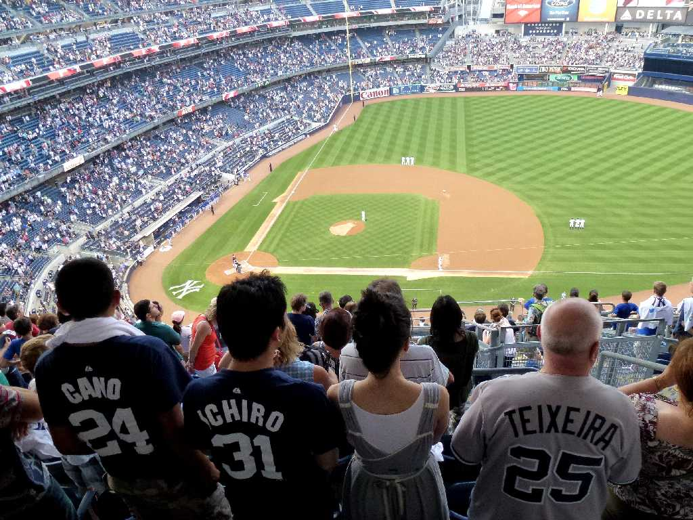
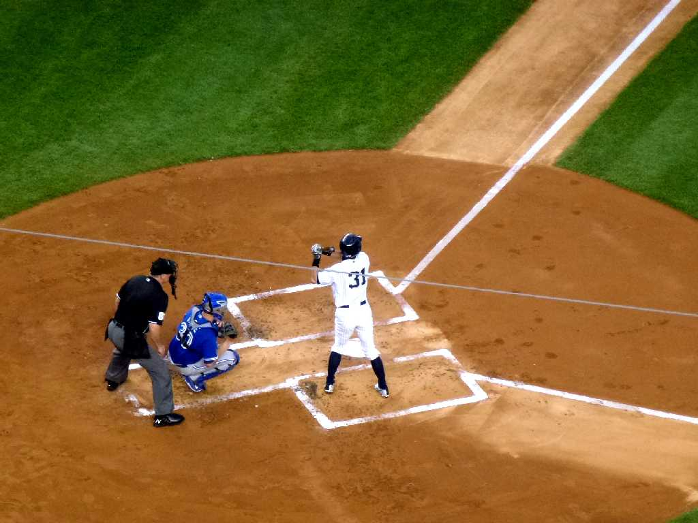
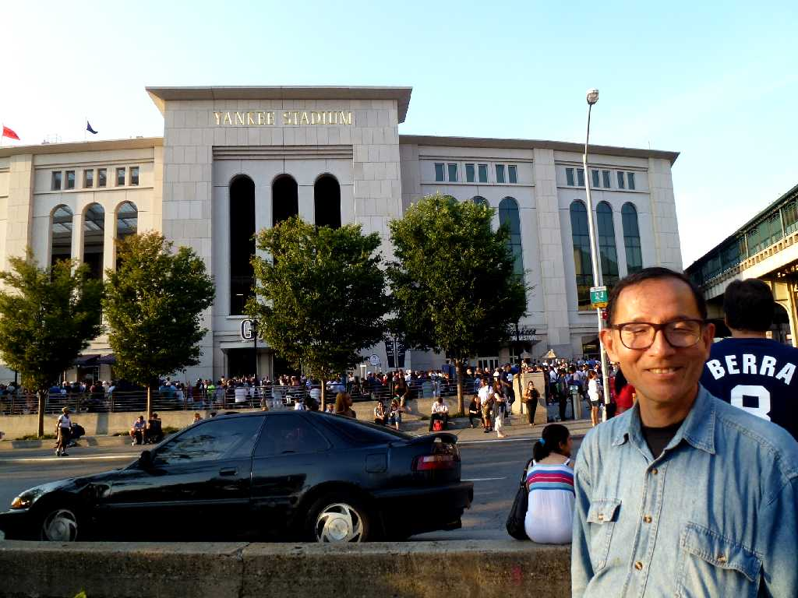

Yankees Stadium New York
８０日間世界一周鉄道の旅で５９日目 イチローが出場するのを願ってヤンキースタジアムで本場のベイスボールを観戦

Ichiro 4,000th base hit
５月に旅行社で予約したチケットがまさかイチローの記念すべき４,０００本安打達成試合の観戦になるとは！大興奮でした。

August 21 2013 Yankees Stadium New York